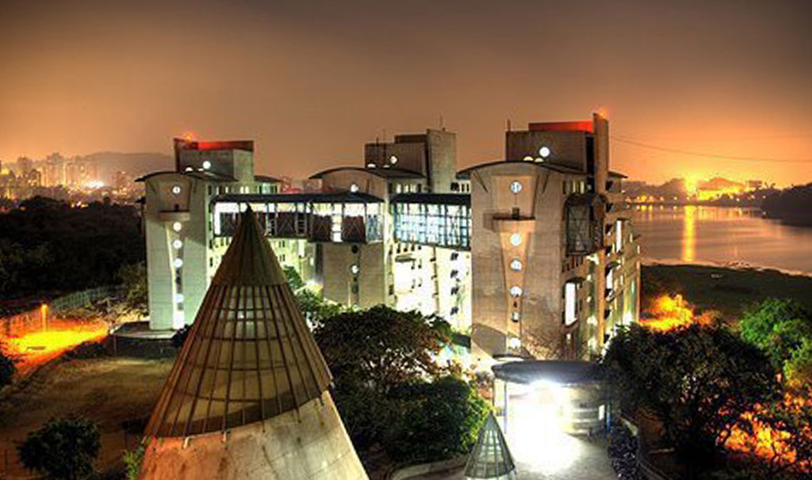

Photo Gallery



When I first stepped into the sprawling and lush green campus of IIT Bombay, I felt a surge of excitement and nervous anticipation. Coming from a smaller town, it was overwhelming to suddenly be surrounded by some of the most brilliant minds in the country, iconic academic buildings, and a culture that values both excellence and freedom. I still remember dragging my suitcase into Hostel 15, the place I’d soon call home for the next few years.
The initial days were filled with discovery — finding lecture halls, attending orientation programs, understanding course credits, and getting to know batchmates who came from all over India. I got lost more than a few times on campus but found help from seniors every step of the way. These early interactions planted the seeds of friendships that I cherish even today.
Over time, I settled into the rhythm of college life. From intense late-night study sessions and early morning classes to weekend hangouts at the lakeside and street food stalls near YP Gate — IIT Bombay has given me a blend of rigorous academics and personal freedom. The journey hasn’t always been smooth; there were tough times when I doubted myself, especially during exam weeks or when project deadlines loomed. But each challenge shaped me, made me more resilient, and taught me the value of persistence.
This website is a heartfelt reflection of that journey. I’ve captured not just milestones and achievements, but also moments of growth, friendship, laughter, and introspection. Through every memory — whether captured in a photo, written in a course notebook, or etched into the walls of my hostel — IIT Bombay has given me a story I’ll proudly carry for life.
Slide to explore my IITB phases!
IIT Bombay is more than just academics. It’s a culture, a movement, and a community. Be it the vibrant cultural festivals like Mood Indigo, tech fests like Techfest, or entrepreneurial events like E-Summit — each corner of the campus breathes opportunity. If you're interested in research, there are cutting-edge labs; if you’re into business, there are clubs and competitions to build your pitch. I found my niche in E-Cell, and it changed my direction completely. You can explore your own path too!
If you’d like to know more about my journey or want to collaborate on something exciting, feel free to reach out. I’m always open to conversations about entrepreneurship, technology, and of course — anything about IIT Bombay!
© 2025 Y NAVA TEJA | IIT Bombay | Civil Engineering, IIT Bombay | Instagram